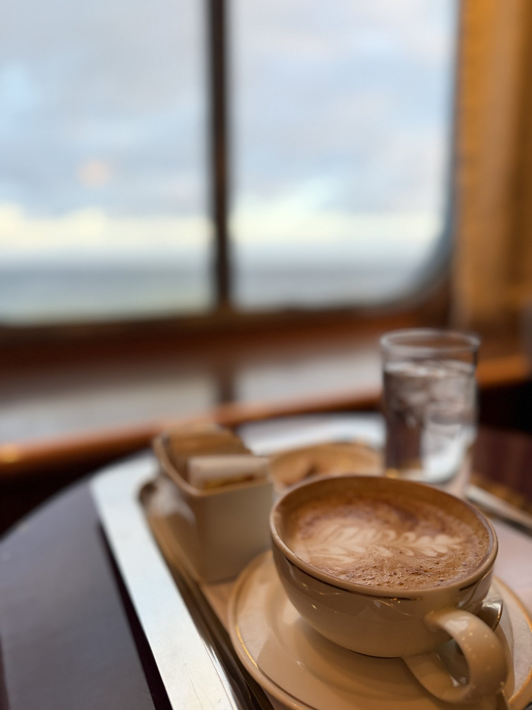
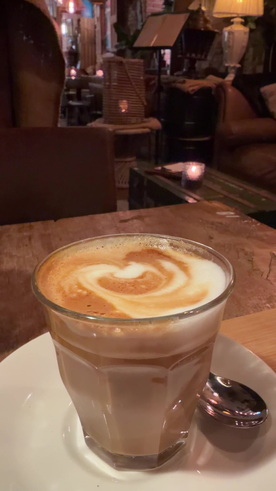
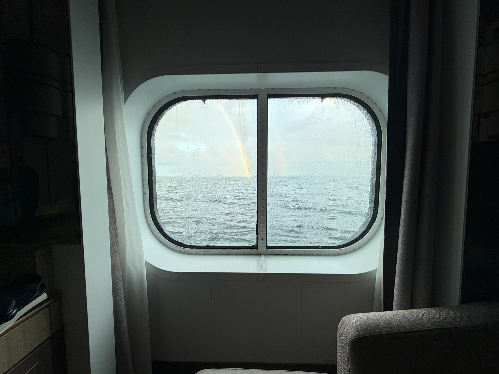
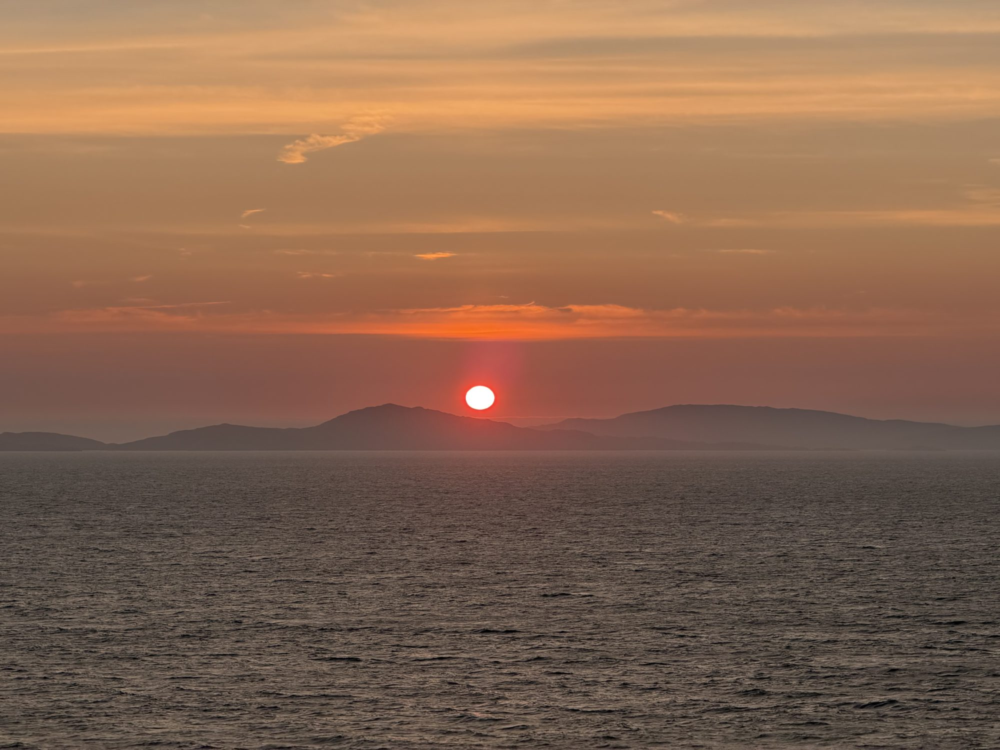

Travel well
The Trip You’re Afraid of Wasting
On letting go of making the most of every day.

Here’s something I’ve learned the slow way: worrying about wasted time is one of the most reliable ways to waste more of it. It’s true at home. On vacation, it’s practically a law of physics.
You know the feeling. You’ve spent months planning and a good chunk of money getting here, so every day has to earn its keep. You take a nap and feel guilty about it. You skip the museum and spend the afternoon wondering if you should have gone.
You’re sitting in a perfectly good café, and part of your brain is already checking what’s next on the list. You’re on the trip, but you’re not quite there.
I understand why it happens. Big trips are rare, and they’re expensive. Time has value, just like a dollar, maybe more. But you don’t get more out of a day by spending it faster. Here’s what I’d tell anyone who wants to actually be on their trip while they’re on it.
Plan for the person who’ll be on the trip
The person who books the trip isn’t the person who takes it. The one who books is sitting at home, rested and ambitious, adding one more city, one more early tour, one more “we’ll never be this close again.”
The one who takes it is jet-lagged, walked out by day three, and would give a lot for a free afternoon. Plan for the second one. If you wouldn’t book a 7 a.m. start at home, you probably won’t love one in Rome either.
Decide what makes a good day
Before you go, decide what a good day looks like, and keep the bar low on purpose: one thing you’re excited about, a good meal, and time to wander. If you get that, the day was a success. Anything else is a bonus, not a box you failed to tick.
It sounds almost too simple. It changes how the whole trip feels, because you stop measuring each day against everything you didn’t do.
Let a “wasted” afternoon count
Some of the best days of my travel life would look like nothing on an itinerary. On a port day in Rotterdam, I went looking for the quietest place I could reach by train and ended up in Delft, walking along the canals and sitting in a café over coffee and apple pie. No tickets, no tour, no list. It was an easy, unhurried, honestly perfect day.

A long lunch, a nap, an hour with a book by a window: that isn’t time lost from the trip. For a lot of us, it is the trip. We just don’t give ourselves permission to call it that.
Expect two true things at once
On any long trip, there comes a point where you’re more than ready to go home, and you’d also book the whole thing again tomorrow. Near the end of eighteen nights on Queen Mary 2, I felt exactly that.

Neither feeling cancels the other. Being ready for your own bed doesn’t mean the trip went wrong. It usually means it went right.
Get there when you get there
Somewhere out on the Atlantic, near the end of the crossing, I wrote myself a note: the ship will be back in New York right on schedule, and I’ll get where I’m going when I get there.
That’s not a bad way to travel. The trip you’re afraid of wasting is the one you’re on right now, and the best way not to waste it is to stop counting and be in it.

If you’re planning something and want help building a trip with room to breathe, tell me about your trip.
Related: A quiet day in Delft from the Rotterdam cruise port